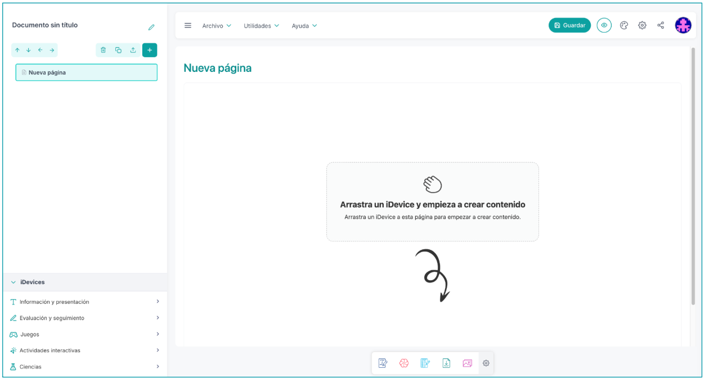
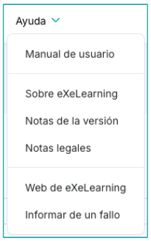
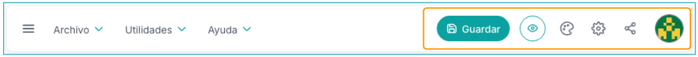
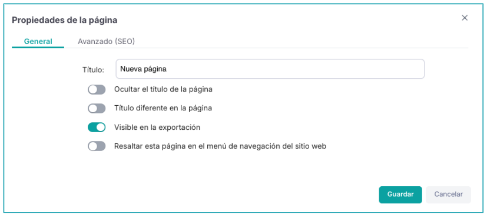
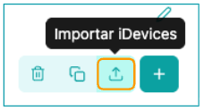
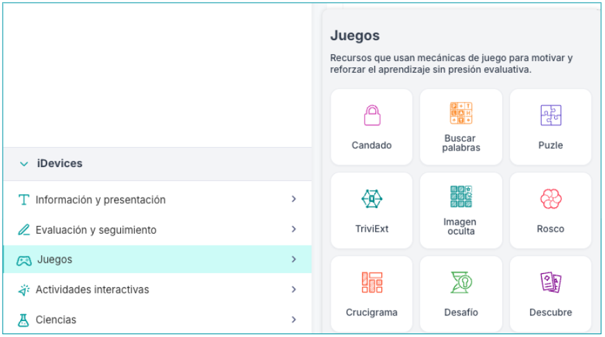

The eXeLearning interface is designed to be intuitive and accessible, making it easy for teachers to create interactive educational materials. It is divided into three main sections:
- Menu bar: contains the essential tools for project management.
- Side column: contains the project title, the Structure panel, and the iDevices panel.
- Central area: Content Editing Area.

Menu bar
This bar, located at the top, contains the essential tools for project management: File, Utilities and Help, as well as access to other functionalities.

File Menu
From this menu we can open and save projects. You can open elp files (created with eXe 2), elpx files (created with exe 3) and editable zip or SCORM files created with eXe. In addition, it is possible to open epub files created from eXe 3.
It also allows you to print and export them (in the desktop version) or download them (in the online version) in different standard formats. This includes formats for the web (HTML), e-books (ePub3) and educational standards such as SCORM or IMS, which are necessary to work with platforms like Moodle.

Furthermore, in the case of the online version, when clicking open you can also access the last saved files and their latest versions.

Utilities Menu
From this menu we can access the following functions:
- Resource report: table containing all the resources (files, images, video, etc.) used throughout the project, indicating the page and box where they are located. Downloadable in CSV format.
- Link validation: table containing the broken links in the project, indicating the page and box where they are located. Downloadable in CSV format.
- File manager: facilitates the insertion of complex content.

Help Menu
Contains information about eXeLearning, the current version, legal notes, website and other relevant project information

Buttons and other accesses
Additionally, from the top right of the interface, we can access the following buttons:

- Save. Saves the project. Remember that all iDevices must be closed in order to save.
- Preview. Shows the content in preview mode, which is how it will look in the Website export.
- Styles. Allows changing the style to one of the default installed ones or importing a new one.
- Project configuration. Allows entering the project's metadata, deciding on export preferences - such as adding a page counter, an accessibility bar, or a search bar - or adding custom code.
- Share (visible only in the online version). Makes it easier for several people to work on the same project at the same time by sharing the link to it.
- User profile. Provides access to:
- User preferences. Allows defining the language and license of the contents.
- Log out / Exit.
Side panel
This side panel is used both to organize the project and to access the content blocks that will be inserted into the pages.
Title
Project title. The title can also be entered or modified in Project configuration (top bar)

Structure Panel
The structure panel allows organizing content into pages and subpages. The user can structure the content, allowing them to create new pages, delete them, duplicate them, or reorganize them.

Additionally, on each page, the properties of the page itself can be modified.

Furthermore, from the Structure panel, the user can import boxes or iDevices to the selected page by clicking on the icon:

iDevices Panel
iDevices (content blocks) are the central element of the tool. They are blocks or "puzzle pieces" that facilitate the easy incorporation of different types of content, including texts, images, videos, audios, and interactive activities. In the interface, these iDevices are grouped into categories for easy location:
- Information and presentation. They display information, organize resources, or enrich content with accessibility and diverse media.
- Evaluation and tracking. They offer quizzes and other tools to check knowledge or progress, with the option to provide feedback.
- Games. They use game mechanics to motivate and reinforce learning without evaluative pressure.
- Interactive Activities. They require direct interaction, promoting active learning and trial-and-error.
- Sciences. Designed to work with content from specific areas or topics.

Clicking on each of these sections displays the iDevices of the category. Later, each of the iDevices will be discussed in depth.
Workspace
This area is the main workspace where the project content is built. To start creating, we click or drag the chosen iDevice from the iDevices panel or from the favorites bar that appears at the bottom of the workspace. The iDevices that appear in this bar can be modified by clicking on the gear that appears on the right.

Boxes Vs iDevice
The content of each page is organized into boxes. Each box can have an associated icon and title and can contain as many iDevices as we want.
When we drag an iDevice to the workspace, we can place it inside an existing box (above or below other iDevices) or directly on the canvas. In this case, a box will be automatically created to contain it. Once the iDevice is edited and saved, we can edit the title and icon of the box.

Both boxes and iDevices can be edited, cloned, deleted, moved, and exported from its toolbar, located in the upper right corner of each one. Additionally, in the properties, other aspects can be configured:
- whether it is visible in the export or not
- whether it is visible only in teacher mode
- add an Id to the iDevice
- Introduce CSS
- that it appears minimized by default (only the boxes).